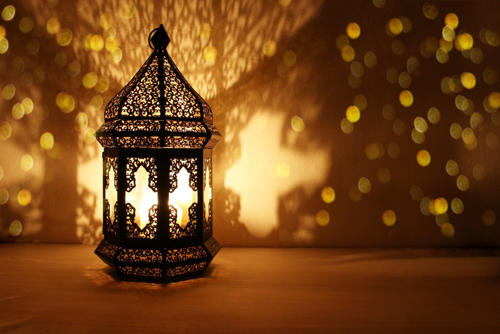
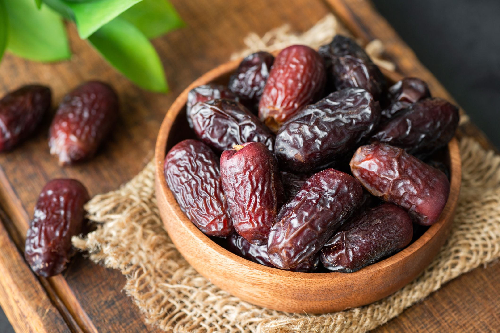

What is Ramadan ?
Ramadan in Language - رمضان لغة
The name “Ramadan” comes from the root “ramadh,” which means extreme heat.
As Ramadan coincided with an extremely hot time; So this name was given to him.
The name is consistent with the nature of this month among Muslims.
As the stomach of the fasting person becomes hot due to the intensity of hunger and thirst, so his stomach becomes ash
تسمية رمضان فجاءت من الأصل «رمَض» وهي شدة الحر،
حيث وافق رمضان وقت حر شديد؛ فأُطلق عليه هذا الاسم.
والاسم متطابق مع طبيعة هذا الشهر عند المسلمين،
حيث أن جوف الصائم يشتد حره من شدة الجوع والعطش فيكون جوفه رمِضاَ
Ramadan according to Islamic law - رمضان شرعا
Ramadan fasting means that Muslims perform the obligation of
fasting imposed on them throughout the days of the blessed month of Ramadan.
Fasting is one of the five pillars of Islam.
يُقصد بصوم رمضان أداء المسلمين لفريضة الصوم المفروضة عليهم
طوال أيام شهر رمضان المبارك، فالصيام ركن من الأركان الخمسة في الإسلام،

In this month Muslims Fast from
before the first light of dawn(Al Fajr)
until the setting of the sun (Al Maghrib)
